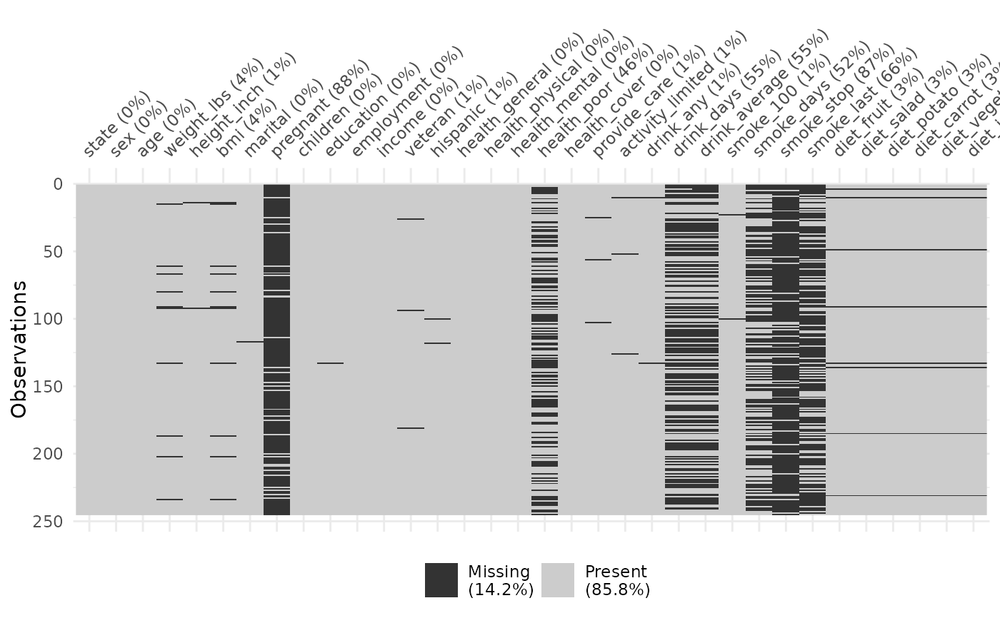

The Behavioral Risk Factor Surveillance System (BRFSS) Survey Data, 2009.
Source:R/data-riskfactors.R
riskfactors.RdThe data is a subset of the 2009 survey from BRFSS, an ongoing data collection program designed to measure behavioral risk factors for the adult population (18 years of age or older) living in households.
Usage
data(riskfactors)See also
the codebook: https://www.cdc.gov/brfss/annual_data/annual_2009.htm
Format: a data frame with 245 observations on the following 34 variables.
stateA factor with 52 levels. The labels and states corresponding to the labels are as follows: 1:Alabama, 2:Alaska, 4:Arizona, 5:Arkansas, 6:California,8:Colorado, 9:Connecticut, 10:Delaware, 11:District of Columbia,12:Florida, 13:Georgia, 15:Hawaii, 16:Idaho, 1 :Illinois,18:Indiana, 19:Iowa, 20:Kansas, 21:Kentucky, 22:Louisiana,23:Maine, 24:Maryland, 25:Massachusetts, 26:Michigan,27:Minnesota, 28:Mississippi, 2:Missouri, 30:Montana,31:Nebraska, 32:Nevada, 33:New Hampshire, 34:New Jersey, 35:NewMexico, 36:New York, 37:North Carolina, 38:North Dakota, 39:Ohio,40:Oklahoma, 41:Oregon, 42:Pennsylvania, 44:Rhode Island, 45:SouthCarolina, 46:South Dakota, 47:Tennessee, 48:Texas, 49:Utah, 50:Vermont, 51:Virginia, 53:Washington, 54:West Virginia,55:Wisconsin, 56:Wyoming, 66:Guam, 72:Puerto Rico, 78:Virgin Islands
sexA factor with levels
MaleFemale.ageA numeric vector from 7 to 97.
weight_lbsThe weight without shoes in pounds.
height_inchThe weight without shoes in inches.
bmiBody Mass Index (BMI). Computed by weight in Kilogram /(height in Meters * height in Meters). Missing if any of weight or height is missing.
maritalA factor with levels
MarriedDivorcedWidowedSeparatedNeverMarriedUnmarriedCouple.pregnantWhether pregnant now with two levels
YesandNo.childrenA numeric vector giving the number of children less than 18 years of age in household.
educationA factor with the education levels
123456as 1: Never attended school or only kindergarten; 2: Grades 1 through 8 (Elementary); 3: Grades 9 through 11 (Some high school); 4: Grade 12 or GED (High school graduate); 5: College 1 year to 3 years (Some college or technical school); 6: College 4 years or more (College graduate).employmentA factor showing the employment status with levels
1234578. The labels mean -- 1: Employed for wages; 2: Self-employed; 3: Out of work for more than 1 year; 4: Out of work for less that 1 year; 5: A homemaker; 6: A student; 7:Retired; 8: Unable to work.incomeThe annual household income from all sources with levels
<10k10-15k15-20k20-25k25-35k35-50k50-75k>75kDontknowRefused.veteranA factor with levels
12345. The question for this variable is: Have you ever served on active duty in the United States Armed Forces, either in the regular military or in a National Guard or military reserve unit? Active duty does not include training for the Reserves or National Guard, but DOES include activation, for example, for the Persian Gulf War. And the labels are meaning: 1: Yes, now on active duty; 2: Yes, on active duty during the last 12 months, but not now; 3: Yes, on active duty in the past, but not during the last 12 months; 4: No, training for Reserves or National Guard only; 5: No, never served in the military.hispanicA factor with levels
YesNocorresponding to the question: are you Hispanic or Latino?health_generalAnswer to question "in general your health is" with levels
ExcellentVeryGoodGoodFairPoorRefused.health_physicalThe number of days during the last 30 days that the respondent's physical health was not good. -7 is for "Don't know/Not sure", and -9 is for "Refused".
health_mentalThe number of days during the last 30 days that the respondent's mental health was not good. -7 is for "Don't know/Not sure", and -9 is for "Refused".
health_poorThe number of days during the last 30 days that poor physical or mental health keep the respondent from doing usual activities, such as self-care, work, or recreation. -7 is for "Don't know/Not sure", and -9 is for "Refused".
health_coverWhether having any kind of health care coverage, including health insurance, prepaid plans such as HMOs, or government plans such as Medicare. The answer has two levels:
YesandNo.provide_careWhether providing any such care or assistance to a friend or family member during the past month, with levels
YesandNo.activity_limitedWhether being limited in any way in any activities because of physical, mental, or emotional problems, with levels
YesandNo.drink_anyWhether having had at least one drink of any alcoholic beverage such as beer, wine, a malt beverage or liquor during the past 30 days, with levels
YesandNo.drink_daysThe number of days during the past 30 days that the respondent had at least one drink of any alcoholic beverage. -7 is for "Don't know/Not sure", and -9 is for "Refused".
drink_avgThe number of drinks on the average the respondent had on the days when he/she drank, during the past 30 days. -7 is for "Don't know/Not sure", and -9 is for "Refused".
smoke_100Whether having smoked at least 100 cigarettes in the entire life, with levels
YesandNo.smoke_daysThe frequency of days now smoking, with levels
EverydaySomedaysandNotAtAll(not at all).smoke_stopWhether having stopped smoking for one day or longer during the past 12 months because the respondent was trying to quit smoking, with levels
YesandNo.smoke_lastA factor with levels
345678corresponding to the question: how long has it been since last smoking cigarettes regularly? The labels mean: 3: Within the past 6 months (3 months but less than 6 months ago); 4: Within the past year (6 months but less than 1 year ago); 5: Within the past 5 years (1 year but less than 5 years ago); 6: Within the past 10 years (5 years but less than 10 years ago); 7: 10 years or more; 8: Never smoked regularly.diet_fruitThe number of fruit the respondent eat every year, not counting juice. -7 is for "Don't know/Not sure", and -9 is for "Refused".
diet_saladThe number of servings of green salad the respondent eat every year. -7 is for "Don't know/Not sure", and -9 is for "Refused".
diet_potatoThe number of servings of potatoes, not including french fries, fried potatoes, or potato chips, that the respondent eat every year. -7 is for "Don't know/Not sure", and -9 is for "Refused".
diet_carrotThe number of carrots the respondent eat every year. -7 is for "Don't know/Not sure", and -9 is for "Refused".
diet_vegetableThe number of servings of vegetables the respondent eat every year, not counting carrots, potatoes, or salad. -7 is for "Don't know/Not sure", and -9 is for "Refused".
diet_juiceThe number of fruit juices such as orange, grapefruit, or tomato that the respondent drink every year. -7 is for "Don't know/Not sure", and -9 is for "Refused".
library(MissingDataGUI) (named brfss)
Examples
vis_miss(riskfactors)

# Look at the missingness in the variables
miss_var_summary(riskfactors)
#> # A tibble: 34 × 3
#> variable n_miss pct_miss
#> <chr> <int> <num>
#> 1 pregnant 215 87.8
#> 2 smoke_stop 212 86.5
#> 3 smoke_last 161 65.7
#> 4 drink_average 135 55.1
#> 5 drink_days 134 54.7
#> 6 smoke_days 128 52.2
#> 7 health_poor 113 46.1
#> 8 bmi 11 4.49
#> 9 weight_lbs 10 4.08
#> 10 diet_fruit 8 3.27
#> # ℹ 24 more rows
# and now as a plot
gg_miss_var(riskfactors)
 if (FALSE) {
# Look at the missingness in bmi and poor health
library(ggplot2)
p <-
ggplot(riskfactors,
aes(x = health_poor,
y = bmi)) +
geom_miss_point()
p
# for each sex?
p + facet_wrap(~sex)
# for each education bracket?
p + facet_wrap(~education)
}
if (FALSE) {
# Look at the missingness in bmi and poor health
library(ggplot2)
p <-
ggplot(riskfactors,
aes(x = health_poor,
y = bmi)) +
geom_miss_point()
p
# for each sex?
p + facet_wrap(~sex)
# for each education bracket?
p + facet_wrap(~education)
}